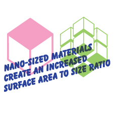

Developments in nanotechnology and planetary-scale engineering point
to new possibilities for us to conform the global environment to our
needs…
read more >

Images & mirages - Nanosciences, Symposium
10 December, 2010
Zoe and Cat will be presenting the Cloud Project at 14:00
10 December, 2010
Zoe and Cat will be presenting the Cloud Project at 14:00
Images & mirages - Nanosciences
9-16 December, 2010
An exhibition at La Fabrique Culturelle in Toulouse
9-16 December, 2010
An exhibition at La Fabrique Culturelle in Toulouse
Presentation at NYU
24 November, 2010
Cat presents at New York University
24 November, 2010
Cat presents at New York University
Presentation at PNCA
August, 2010
Cat presents at the Pacific Northwest College of Art, Portland, USA
August, 2010
Cat presents at the Pacific Northwest College of Art, Portland, USA
Vintage at Goodwood
13-15 August, 2010
Zoe presents at PechaKucha. Van is exhibited at festival.
13-15 August, 2010
Zoe presents at PechaKucha. Van is exhibited at festival.
AND Salon, Haworth Art Gallery, Accrington
10 April 2010
Talk hosted by Professor Andy Miah, Dr Mark Cutter also presenting.
10 April 2010
Talk hosted by Professor Andy Miah, Dr Mark Cutter also presenting.
Grizedale Forest, Cumbria
1-3 April, 2010
Part of AND festival
1-3 April, 2010
Part of AND festival
Flagmarket Square, Preston
27 March, 2010
Part of the AND festival
27 March, 2010
Part of the AND festival
Lancaster University
17-19 March, 2010
Special visits from Bronislaw Szerszynski, Experimentality Research and Peter Hatto who chairs an ISO group developing international standards for nano.
17-19 March, 2010
Special visits from Bronislaw Szerszynski, Experimentality Research and Peter Hatto who chairs an ISO group developing international standards for nano.
Prof. John Donegan
5th dec. 2009, 1pm
Prof. John Donegan’s groups’ research interests are in Nanophontics
5th dec. 2009, 1pm
Prof. John Donegan’s groups’ research interests are in Nanophontics
Prof Martin Hegner
4th Dec. 2009, 1pm
The scientific interests of Martin Hegner’s research group are focused on interdisciplinary research in the fields of single molecule manipulation, biophysics, bio-diagnostics and development and application of biological sensing devices
4th Dec. 2009, 1pm
The scientific interests of Martin Hegner’s research group are focused on interdisciplinary research in the fields of single molecule manipulation, biophysics, bio-diagnostics and development and application of biological sensing devices
Prof Mike Coey
3rd Dec. 2009, 1pm
Principal Investigator for the research of the Magnetism and Spin Electronics group at CRANN
3rd Dec. 2009, 1pm
Principal Investigator for the research of the Magnetism and Spin Electronics group at CRANN
Prof John Boland
Dec. 2, 2009, 1pm
The research focus of John Boland’s Research Group is the area of surface chemistry and the anner in which it controls the properties of nanoscale materials and devices.
Dec. 2, 2009, 1pm
The research focus of John Boland’s Research Group is the area of surface chemistry and the anner in which it controls the properties of nanoscale materials and devices.
TEDx Talk
Nov 12th, 8.30 pm
Serving nano ice cream at TEDx talk hosted by the Science Gallery
Nov 12th, 8.30 pm
Serving nano ice cream at TEDx talk hosted by the Science Gallery
The Cloud Project in Dublin
12/11/09 - 04/12/09
We'll be serving nano ice cream daily outside the Science Gallery.
12/11/09 - 04/12/09
We'll be serving nano ice cream daily outside the Science Gallery.